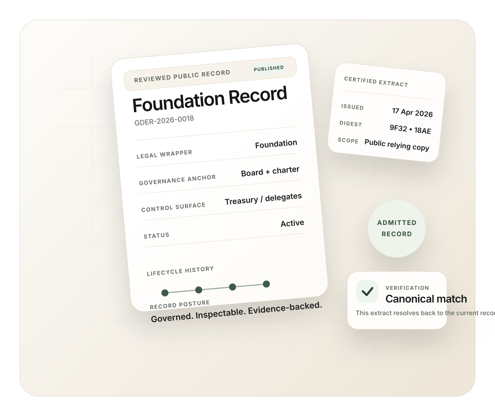
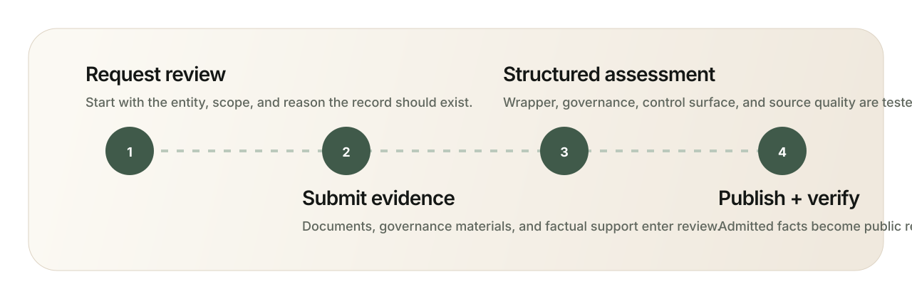

Governed public record
A public record system for governed digital entities.
GDER is a public register for crypto-native entities with documented wrappers, governance, and operating control. It helps counterparties inspect what exists, where it is organized, and what evidence supports it.
The public site starts with a clearly labeled research set. Reviewed records and portable extracts appear only after structured review.
Research set vs reviewed record
Research is collected. Records are reviewed.
GDER begins with a clearly labeled research set. Reviewed records and extracts appear only after structured review, linked evidence, and a verification path that resolves back to source.
Research set
Publicly visible source material gathered for review.
These entries are research surfaces, not yet reviewed public records. Each should make the wrapper, jurisdiction, and inclusion basis visible immediately.
Reviewed public record
A reviewed record in GDER, supported by structured evidence and verification.
The reviewed record becomes the canonical inspection surface for the entity, with a portable extract and a verification path that should resolve the underlying record and source evidence.

The legal or quasi-legal structure the entity actually uses.
Where the structure sits and which legal context applies.
The official governance, constitutional, or forum source behind the entity.
The treasury or operating-control evidence that helps show how the entity works in practice.
Current research set
Browse the researched universe.
0 entities
No entities match the current filter.
How GDER works
From request to reviewed record.
GDER becomes useful when research turns into an inspectable public record with history, portable extracts, and a verification path that lets others rely on what they see.
Request
An entity representative requests review and submits core materials.
Review
GDER reviews wrapper, jurisdiction, governance, operating control, and supporting evidence.
Publish
The entity moves from research-set context into a reviewed public record inside GDER.
Verify
Verification should resolve the underlying record and source evidence.

Verification path
Reviewed records should travel as portable extracts while still resolving back to the underlying record and evidence set.
Trust and boundary
Built for inspection, not promotion.
GDER should make wrapper, jurisdiction, governance, and evidence easier to inspect. It should not blur research with reviewed fact or act like a pay-to-rank listing surface.
What GDER does
Creates a governed public inspection surface.
- Creates a governed, publicly inspectable record surface
- Makes wrapper, jurisdiction, governance, and evidence easier to inspect
- Produces shareable extracts connected to reviewed records
What GDER does not do
Does not confuse mention with verification.
- It is not a generic crypto directory
- It is not pay-to-rank
- It is not presented as a sovereign-registry replacement
Review requires confirmation that you are authorized to act for the entity. GDER reviews evidence. It does not sell placement or ranking.
Request review
Request review for a governed public record.
If you represent an entity and want a reviewed record in GDER, start the review process. If you are conducting inspection or research, browse the public research set.
Start with scope, evidence, and representative fit.
Review starts with a serious submission, not a listing request.
The first step is a scoped review request. We qualify fit, evidence, and representative authority before anything is presented as a reviewed record.
GDER is a governed, publicly inspectable register. It is not presented as a sovereign-registry replacement.